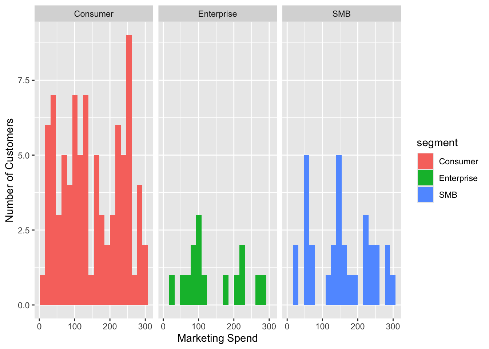
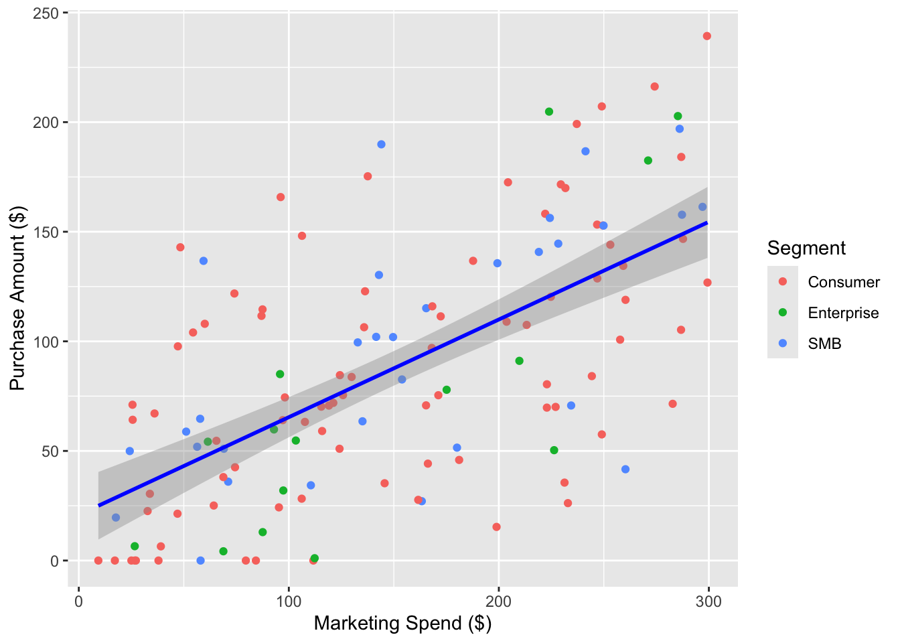
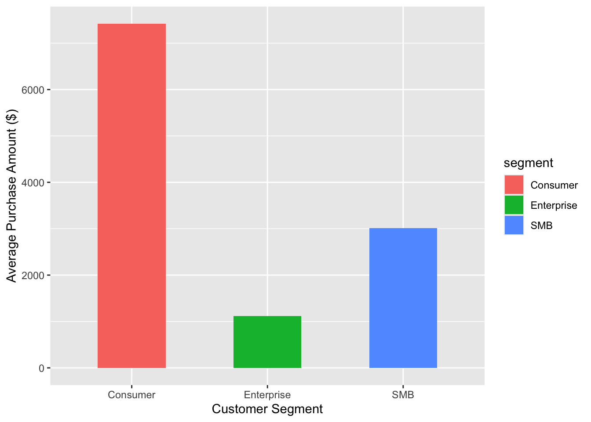

[1] 132[1] 6Our company ran a personalised marketing campaign last quarter, where we contacted 150 of our customers through ads, emails and coupons. Not every customer received the same level of attention, some customers had a lot more spent on them than others. The goal is to find out whether spending more on a customer actually leads them to buying more. This report uses the campaign data from 150 customers to answer this question.
We want to know if spending more money on a customer made them buy more. To answer this we will compare the marketing spend and purchase amount for each customer. We will also see if this trend looks different across our three customer groups, Consumer, SMB and Enterprise.
The dataset contains information about 150 customers from our last quarter’s personalised marketing campaign. It records how much was spent marketing to each customer, how many times they visited the site and how much they actually purchased. Before starting the analysis, the data required some cleaning to make it suitable for use. A total of 18 customers had no purchase amount recorded and were removed as they could not contribute to the analysis. The signup date column contained dates written in several different formats across the dataset, which were all standardised into one consistent format. The notes column was also removed as 110 out of 150 values were missing, making it too incomplete to be of any use.
The cleaned dataset contains 132 observations and 6 variables. The variables include customer ID (text), signup date (date), marketing spend (numeric), number of visits (numeric), purchase amount (numeric) and customer segment (category).
[1] 132[1] 6| segment | Customers | Avg_spend | Avg_pur |
|---|---|---|---|
| Consumer | 86 | 148.90 | 86.29 |
| Enterprise | 15 | 142.52 | 74.67 |
| SMB | 31 | 155.20 | 97.15 |
The processed dataset contains 132 observations and 6 variables. Out of the original 150 customers contacted in the campaign, 132 had a recorded purchase amount and were kept for analysis. As seen in Table 1, the Consumer segment is the largest group with 86 customers, followed by SMB with 31 customers and Enterprise with only 15 customers. The average marketing spend was fairly similar across all three groups, ranging from $142 to $155, suggesting the campaign budget was distributed evenly. However the average purchase amount varied across segments, SMB customers bought the most on average at $97.15, followed by consumer at $86.29 and Enterprise at $74.67.

As shown in Figure 1, marketing spend was spread across the full range of $0 to $300 for all three customer segments, suggesting the campaign did not heavily favour any particular spending level. The Consumer segment had the most customers and showed a slight concentration of spend towards the higher end, around $250 to $300. The Enterprise segment had the fewest customers with spend mostly falling between $50 and $250, which is expected given it is the smallest group. The SMB segment showed a fairly even spread across all spending ranges. Overall the budget appears to have been distributed evenly across all three customer groups.
As seen in Figure 2, customers who received higher marketing spend generally purchased more, The upward trend line suggests a positive link between the two variables although the spread of dots around the line indicates that marketing spend is not the only factor driving purchases.

Figure 3 shows that Consumer customers had the highest average purchase amount, followed by SMB and then Enterprise customers. These results suggest that the personalised marketing campaign was effective customers who received more marketing spend did tend to buy more, which answers our research question.
